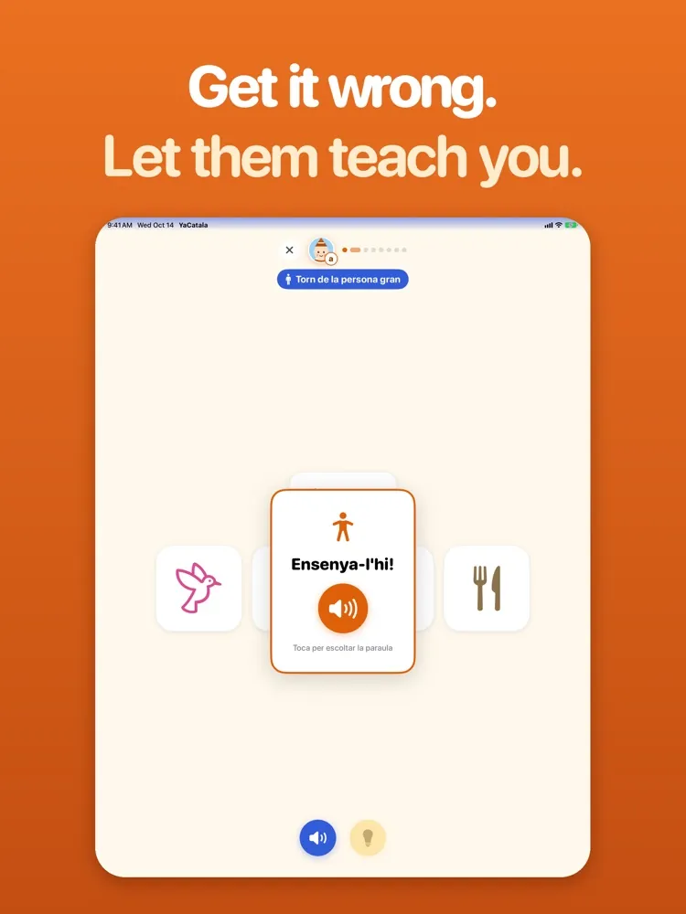
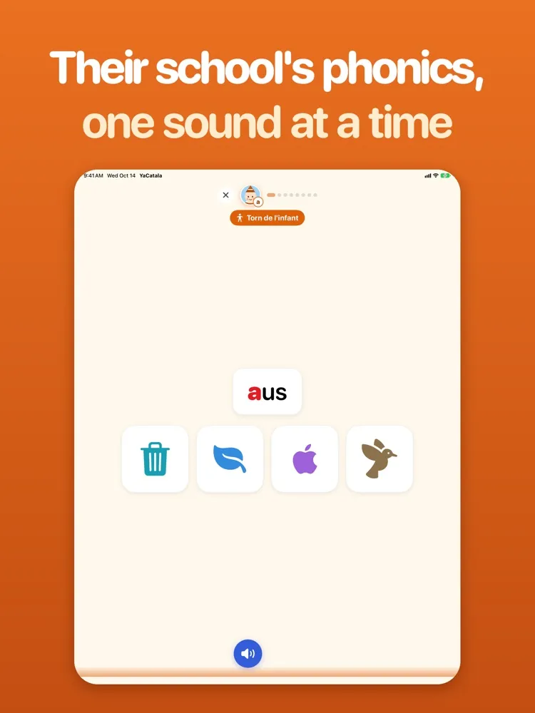
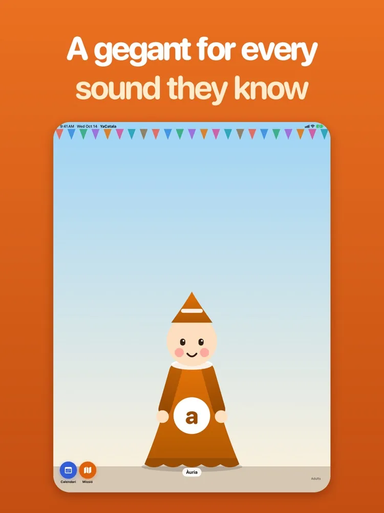
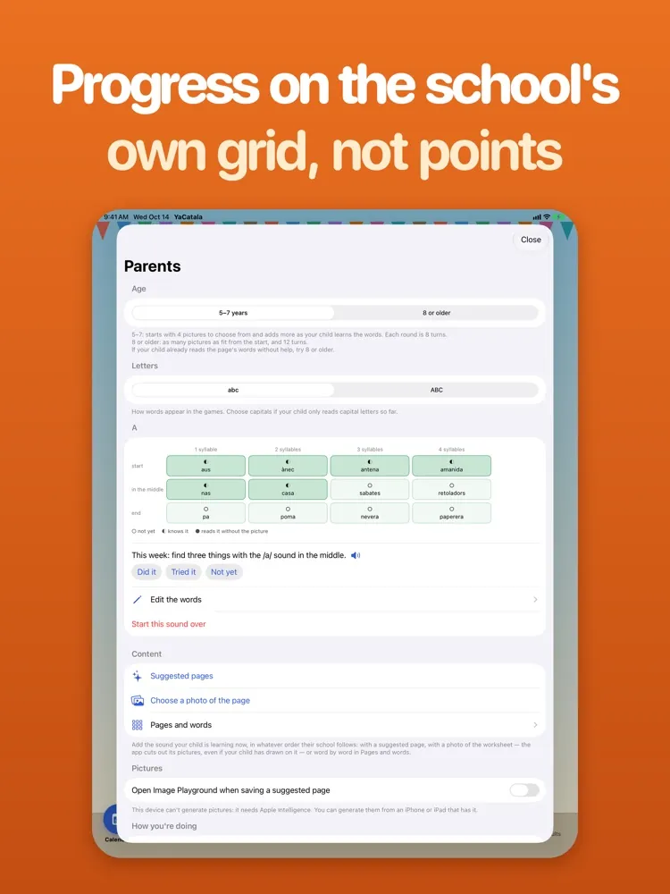

Equivoca't. Deixa que t'ensenyi.
El vostre fill aprèn a llegir en català a l'escola, i vosaltres tampoc no el parleu. YaCatala en fa el joc — jugueu al seu costat, us equivoqueu i és ell qui us ensenya.
Sense anuncis · Sense comptes · Res no surt del dispositiu




Funcions
Segueix el llibre de l'escola
Un so per pàgina, dotze paraules ordenades segons on cau el so i quantes síl·labes tenen — la mateixa setmana que el vostre fill el troba a classe.
Jugueu junts
Us alterneu amb les mateixes paraules. Quan l'adult falla, arriba el moment «Ensenya-l'hi!» i l'infant li ensenya la paraula.
Tres jocs curts
Troba el dibuix d'una paraula, escolta quin és l'intrús i pica el tambor una vegada per cada síl·laba. Uns minuts al dia.
Missió del so
Cada setmana, sortiu a buscar tres coses amb el so, a casa o pel carrer. El joc s'acaba fora de l'app.
Que coincideixi amb la vostra escola
Fotografieu una fitxa del llibre del vostre fill, o comenceu amb una pàgina suggerida per a qualsevol so. Image Playground pot dibuixar els dibuixos que faltin.
Res de què preocupar-se
Sense anuncis, sense comptes, sense ratxes per perdre. El progrés es mostra a la graella de l'escola, no en punts — i no surt mai del vostre dispositiu.
Preguntes de les famílies
No parlo català. Puc ajudar igualment?
Aquesta és la idea. Jugueu com a aprenents: quan us equivoqueu, el vostre fill us ensenya la paraula. Les pantalles de pares són en català, castellà o anglès, i les paraules es llegeixen en veu alta.
Segueix el que fan a l'escola?
Cada pàgina segueix el llibre de fonètica de les aules catalanes: un so, dotze paraules. També podeu fotografiar la fitxa del vostre fill i convertir-la en una pàgina.
Quines dades recull del meu fill?
Cap. No hi ha comptes, ni anuncis, ni analítica, i tot es queda al vostre dispositiu. Vegeu la política de privadesa (en anglès).
Per a infants d'uns 5 a 7 anys.
Dissenyada per a iPad, també a iPhone. Pantalles de pares en català, castellà o anglès.
Necessiteu ajuda amb YaCatala? Visiteu la pàgina d'ajuda o escriviu a alexander.xiangyu.sun@gmail.com.
La pàgina d'ajuda i la política de privadesa són en anglès.